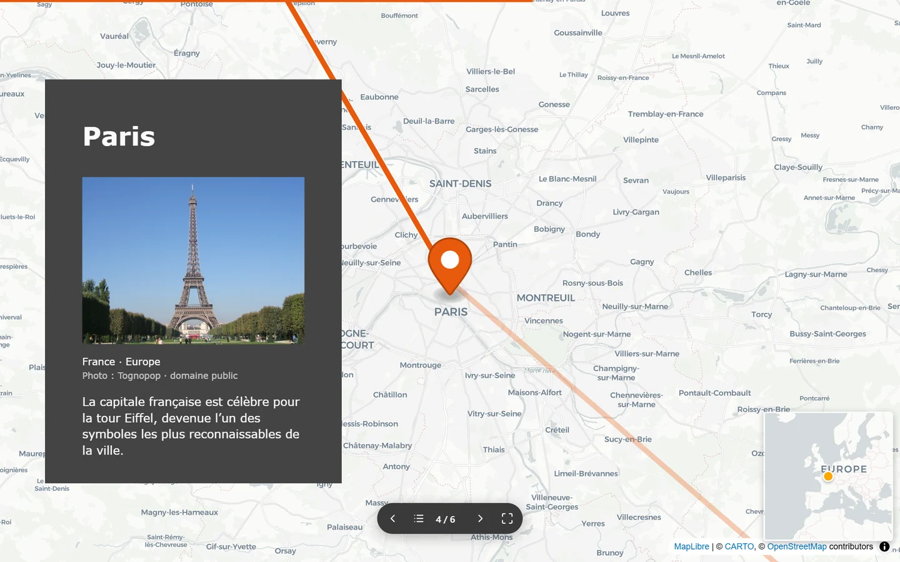
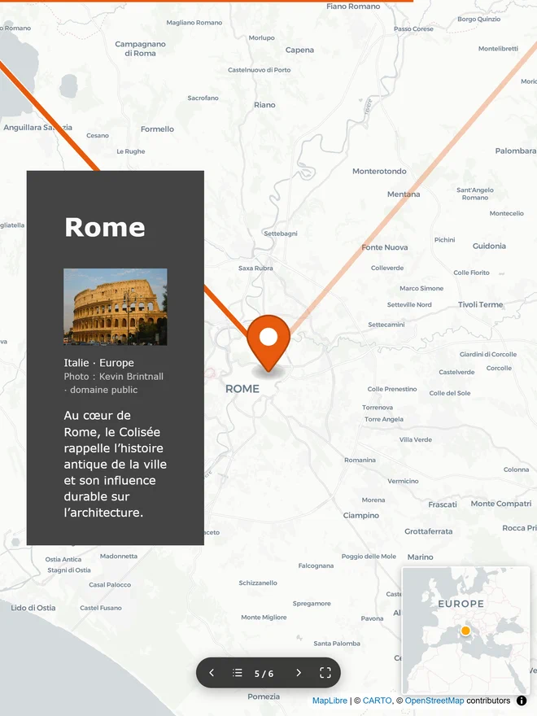
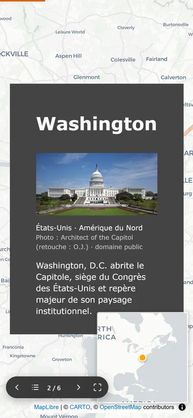

Libre et gratuit · sans compte · dans votre navigateur
Racontez vos histoires sur une carte
StoryMap est un éditeur visuel de récits cartographiques. Vos lecteurs font défiler la page, la carte les emmène d’étape en étape. Un cours d’histoire, une étude de cas en géographie, l’itinéraire d’un personnage de roman, une sortie scolaire : tout ce qui se déroule quelque part peut se raconter ainsi.
Aucune inscription : l’éditeur s’ouvre directement.
Créer
Trois gestes, pas une ligne de code
Vous éditez directement le rendu final : ce que vous voyez est ce que vos lecteurs verront.
-
1Écrivez sur la carte
Titres, textes, images, vidéos : vous écrivez dans le panneau, comme dans un traitement de texte.
-
2Cadrez chaque chapitre
Déplacez, zoomez, inclinez la carte : la vue est enregistrée automatiquement. Dix fonds de carte, dont une vue satellite, et le relief en 3D.
-
3Ou partez de vos données
Un tableur intégré, une ligne par chapitre, ou un fichier CSV, GeoJSON, GPX ou KML : chaque lieu devient un chapitre.
Partager
Une page web autonome, à publier ou à envoyer
L’export produit un seul fichier, qui contient la storymap et ses images. Déposez-le sur un site ou envoyez-le : il s’ouvre dans un navigateur récent, sur ordinateur, tablette ou téléphone (une connexion Internet est nécessaire pour les fonds de carte).
- Page web autonome (.html) ou site web (.zip)
- QR code et code d’intégration, une fois la storymap publiée
- Fichier .json pour la sauvegarder et la rouvrir dans l’éditeur
- Barre de progression, sommaire et navigation au clavier pour les lecteurs



Garanties
Simple, libre, sans compte
-
Sans installation
Tout se passe dans votre navigateur.
-
Sans compte
Ni inscription, ni mot de passe.
-
Libre et gratuit
Un logiciel libre, sous licence MIT.
-
Vos récits chez vous
Enregistrés dans votre navigateur ; exportez-les pour les sauvegarder.
Les fonds de carte, les polices et la recherche de lieux sont chargés depuis des services en ligne (CARTO, OpenFreeMap, OpenStreetMap…). Vos storymaps, elles, ne quittent pas votre navigateur tant que vous ne les exportez pas.
Quelle histoire raconterez-vous ?
Un exemple est fourni pour démarrer : « Le tour du monde en cinq capitales ».
Ouvrir l’éditeur